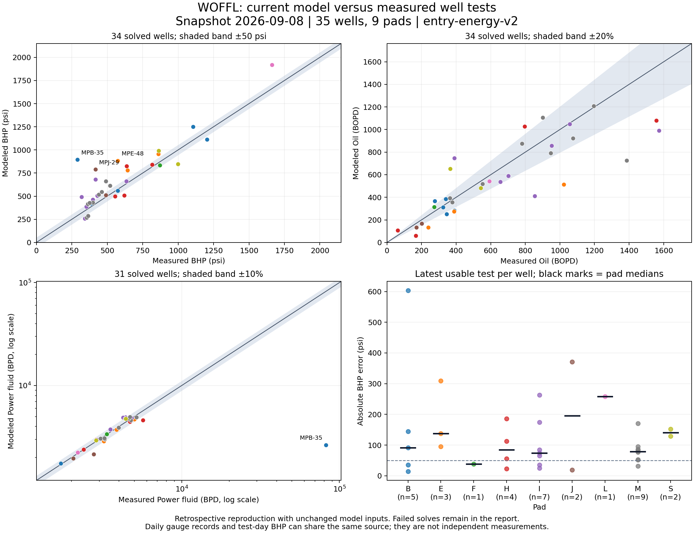

Current model inputs compared with actual gauge and test observations. No refitting. Local report; no external connections. Medium remains at two workers.
One latest usable test per well. Failed solves and exclusions remain visible. Missing PF volume does not exclude BHP/oil comparisons. Historical reproduction is not independent qualification.
Full report · Download well CSV · Download observation CSV
